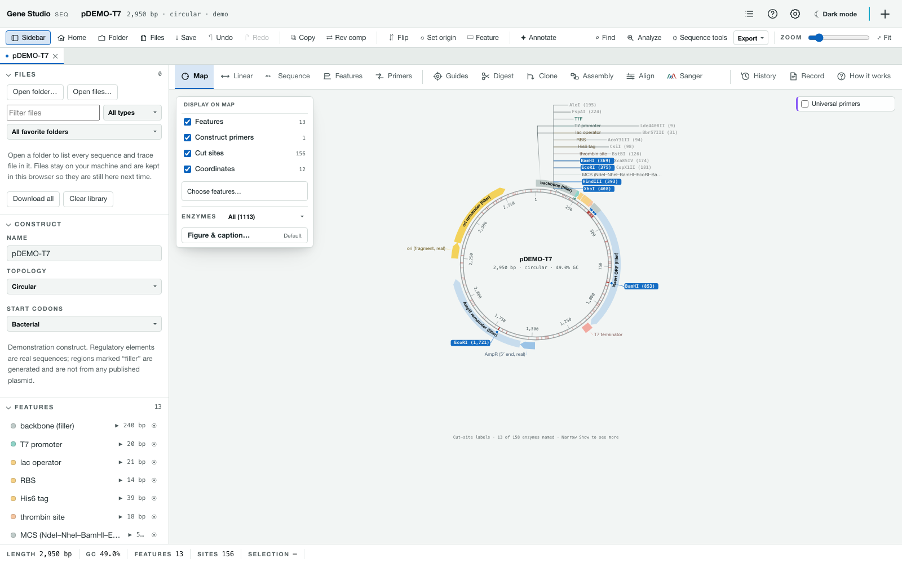
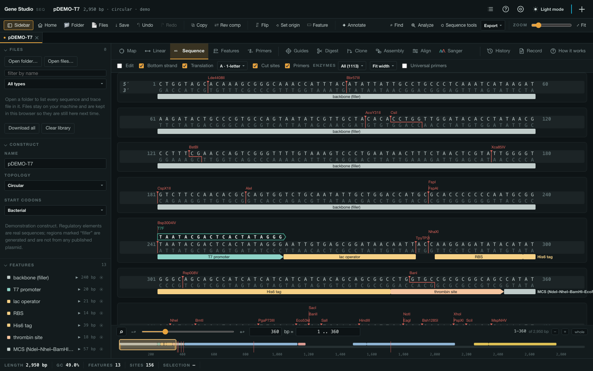
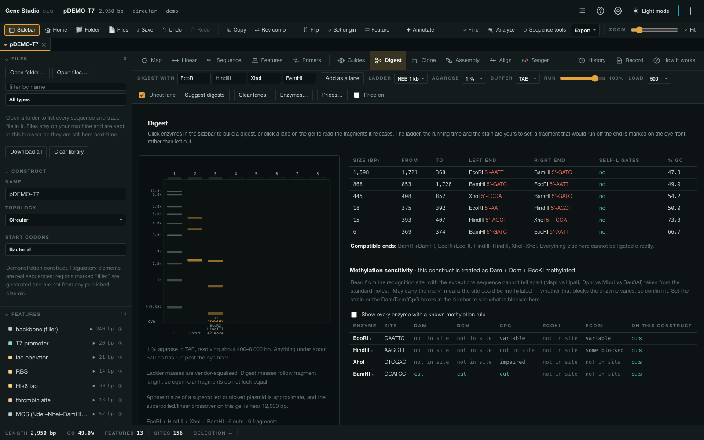
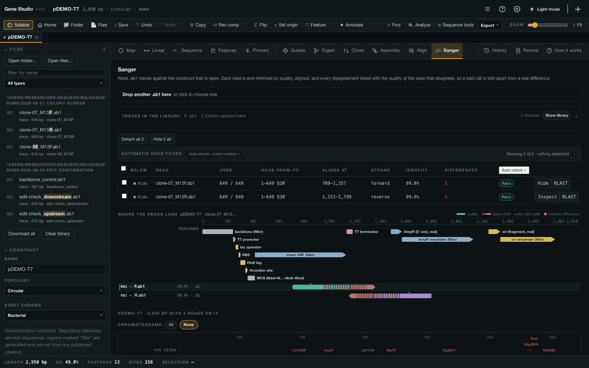
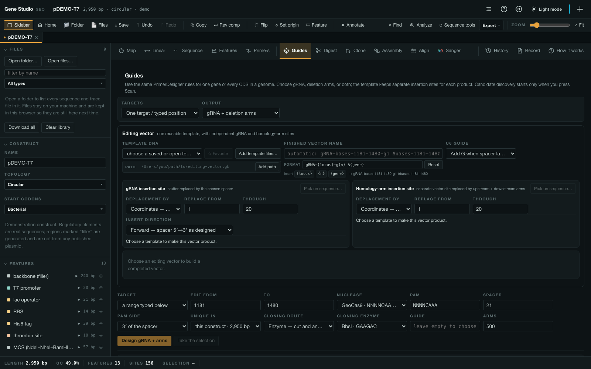
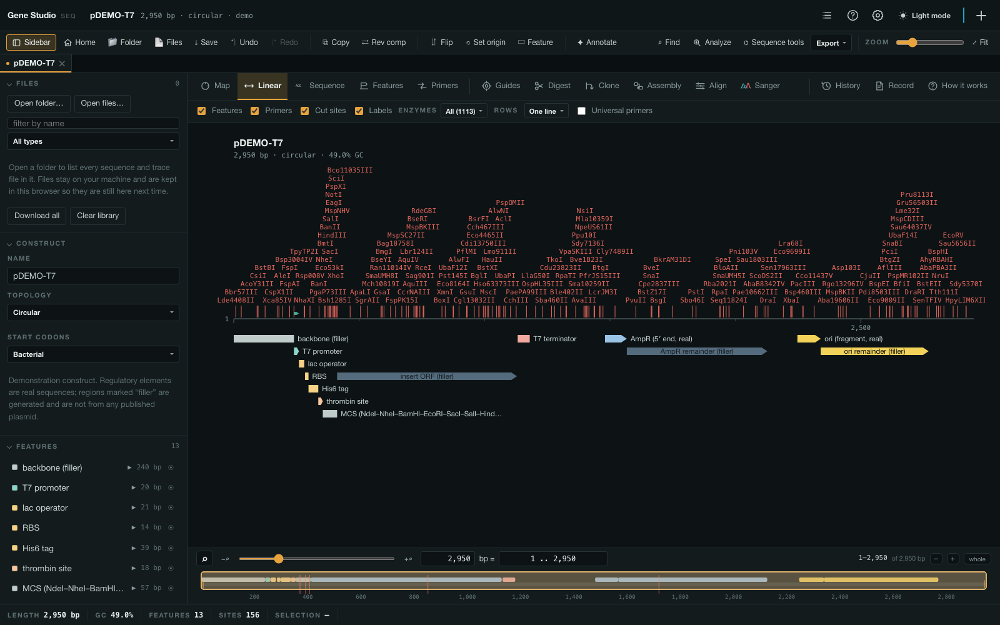

Private beta · macOS & Windows
The plasmid you are holding, drawn from the file you already have.
Circular and linear maps, an annotated sequence, restriction digests with a simulated gel, PCR and cloning, CRISPR guides and Sanger review — over GenBank, SnapGene .dna, FASTA and .ab1, written back without losing what was in them.
- .gb
- .gbk
- .gbff
- .dna
- .fa / .fasta / .fna
- .ab1
Free while the beta lasts. A licence is written for one computer and takes a minute — ask for one.

01
The sequence, with everything on it
Each stretch is one card: the enzymes above it, the primers that read 5′→3′, both strands, and each translation drawn directly under its own residues.
- A primer is drawn as it is — the 5′ overhang and any designed mismatch stepped down out of the shaft.
- A cut is a stepped mark through both strands, so which strand breaks where, and which way the overhang points, reads off the bases.
- Type to edit, with the features carried across the edit and one undo for a run of typing.

02
A digest you can read before you run it
Pick enzymes and the gel redraws as you type. Lanes are loaded by clicking the well, the ladder and the agarose are the ones you actually use, and a fragment that would run off the end is marked on the dye front rather than left out.
- Suggest digests scores every combination for bands the agarose can actually resolve.
- Dam, Dcm, CpG, EcoKI and EcoBI — judged against the strain the DNA was grown in and the one it is going into.
- 2,672 published experiments from REBASE sit behind the verdict, not one word.

03
Sanger reads, against the construct they came from
Drop the .ab1 files from a run and each is trimmed, aligned and laid under the reference as a pileup, with its own chromatogram in the same columns. A real difference is told apart from a decayed tail rather than counted with it.
- Indels are aligned as indels — one deleted base is one event, not two hundred mismatches.
- What it does to the protein, on the spot:
Ala41Val · missense, or the frame it shifts and where that frame stops. - A .dna carrying aligned traces brings them in — SnapGene keeps them inside the file, and they are read.

04
Guides, arms and the oligos to order
A port of the lab's own R package: guide scoring, Golden Gate oligos, Gibson inverse-PCR primers and four-primer deletion arms — the thresholds and weights copied rather than reinvented, because they are tuned against real cloning outcomes.
- One gene or every CDS in a genome, each target contributing its own top-ranked guides.
- The editing vector is a real file, starred and kept, so moving or changing the source cannot change the design.
- The product opens as its own tab — original, the exact replacement, and the transformed vector, one under the other.

05
A genome is a construct too
The linear map zooms from a whole chromosome down to two genes with a ruler over them, and the sequence scrolls a 4.6 Mb record without pages. An assembly of 186 contigs is listed down the side and read by hopping between its pieces.
- Prodigal where it is installed, as real Prodigal — and never over a record that brought its own genes.
- eggNOG-mapper, InterProScan and DefenseFinder results drop straight onto the genes, column for column.
- Terminators, RBS and rare codons for every gene at once — the 3′ ends of a whole genome in under a second.

06
Also in the box
Twelve views, one construct at a time or a dozen in tabs. None of this is an add-on.
07
It opens what your lab already has
And writes it back. Every claim here was checked against somebody else's reader — Biopython and snapgene_reader — over hundreds of this lab's own files, not against a fixture written by whoever wrote the test.
.gb .gbk .gbff
The record above FEATURES is kept whole — accession, organism, lineage, the papers, the structured comments — and written back as it arrived. Saving twice gives a byte-identical file.
.dna
SnapGene files are read and written packet for packet: the colours, the edit history, the aligned traces and every packet this reader does not interpret ride through untouched.
.fa .fasta .fna
A file carrying 85,142 records is listed and read a record at a time, in milliseconds — because splitting is cheap and parsing everything is not.
.ab1
Read as a read of the construct, not as a document of its own: end-trimmed by quality, aligned both ways round, and kept with the plasmid it was read against.
out
GenBank — and a separate sharing copy that says what it left behind — SnapGene .dna, FASTA, an .xlsx workbook, and every drawing as vector.
on your machine
Your files are read from disk and stay there. Nothing is uploaded, and the only outbound requests are the ones you press — BLAST, InterProScan, eggNOG — each named before it is made.
08
Questions
Does it work offline?
Yes, and so does the licence check — it is verified on your own machine against a key built into the app, with nothing to ask and no server to be down. The only requests this app makes are the ones you press: a BLAST, an InterProScan or eggNOG submission, and the once-a-launch look for a newer build, which can be switched off.
Is it open source?
No. It is free to use for research and is given to named people; copying, changing or passing it on needs written permission. Third-party components — SeqFold, MAFFT, Electron, the REBASE data and the rest — keep their own terms, and every one of them is named in the app.
Will it break my SnapGene files?
Opening one changes nothing on disk. Saving one writes it back packet for packet, including every packet this reader does not interpret — and the result is opened by snapgene_reader and by Biopython's SnapGeneIO with no warnings at all, which is checked over dozens of this lab's own files. Files written here have also been opened in SnapGene 8 itself.
Which Mac, which Windows?
The Mac build is Apple silicon and signed with a Developer ID. The Windows build is a 64-bit installer, with a portable build beside it. Updates arrive in the app: one press downloads and installs the newest version, and the button names the version it is about to install.
What about a genome, not a plasmid?
A 4.2 Mb chromosome with 8,338 features opens in about a second with its map drawn. The restriction scan is the one thing that still costs on a record that size, so past a few hundred kilobases it is scheduled just after the first paint instead of in front of it.
How much will it cost after the beta?
Nothing is charged during the beta, and not retrospectively for it either. The intention is half of what SnapGene charges for the equivalent seat; the table is in the app under Settings → About.
09
Getting in during the beta
Gene Studio is free to use and is not open source: it is given to named people for research. A licence is written for one computer and it takes a minute.
- Download and open it. The first window shows a Machine ID — twelve characters that identify the computer to nobody but the licence.
- Press Ask for a licence. It writes the mail for you, with your name, institution and that id already in it.
- Paste the licence that comes back into the same window. It is verified on your machine — nothing is sent anywhere, so it works on a plane.
Bug reports are welcome at the same address — the app writes one for you, with the version, the platform and what it was doing, under the ? in the toolbar.